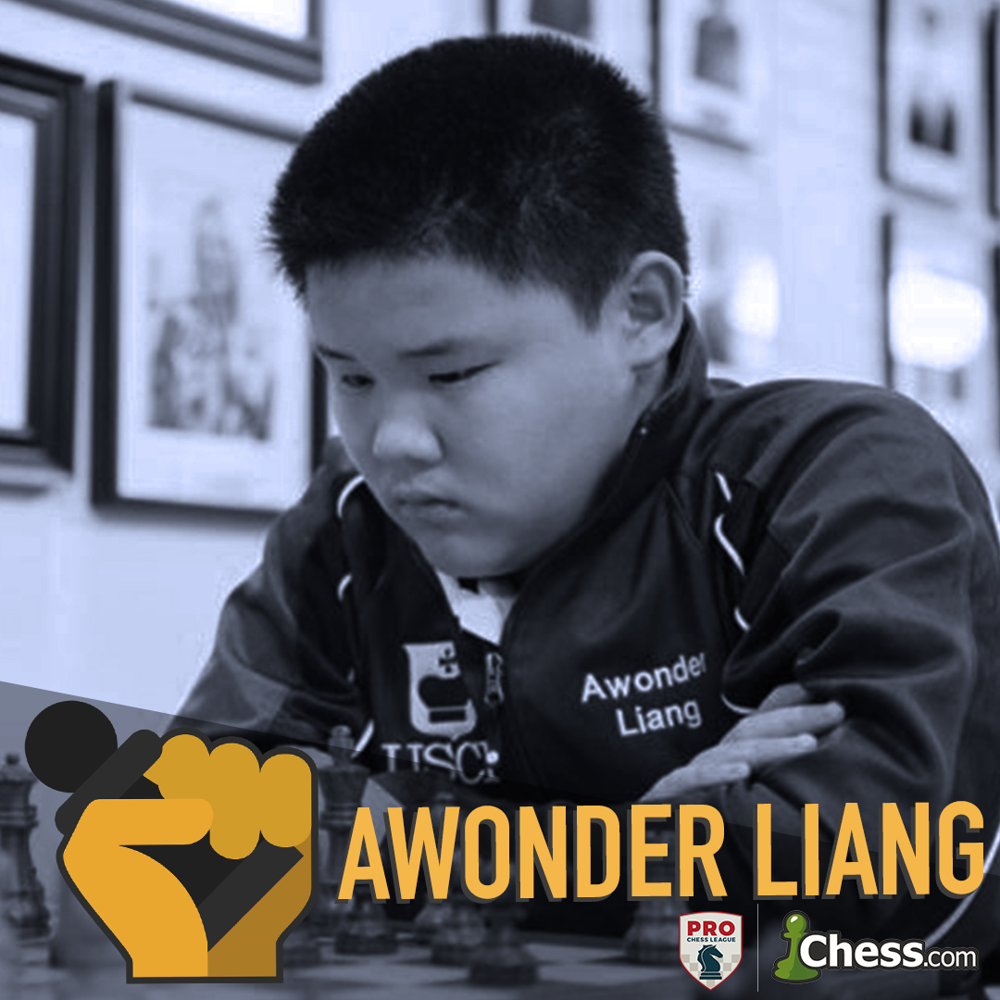
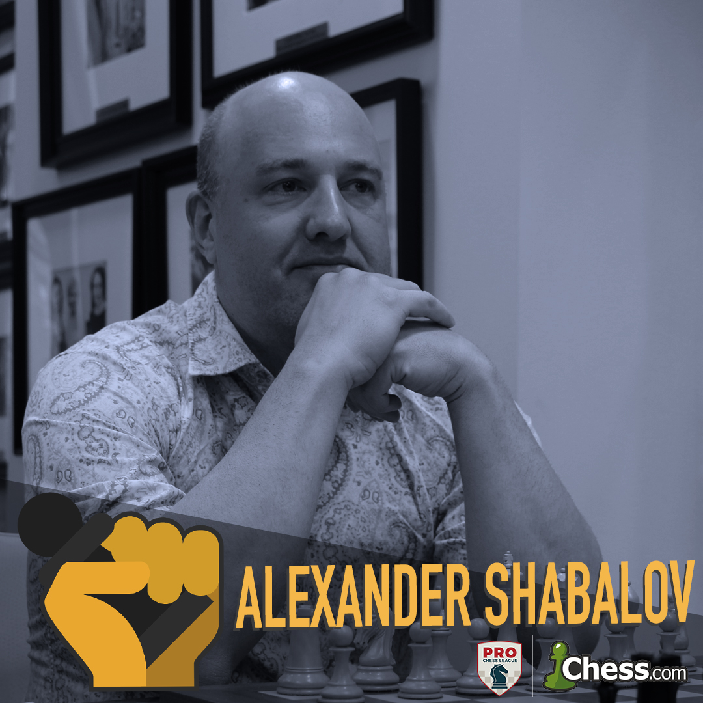
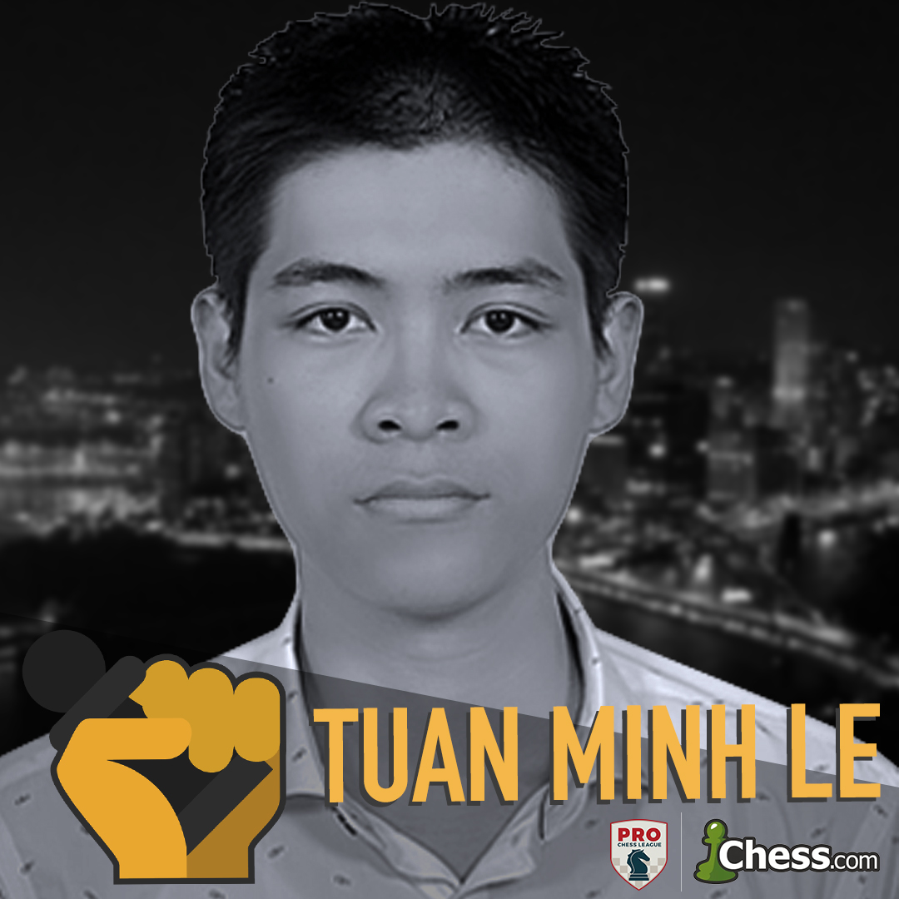
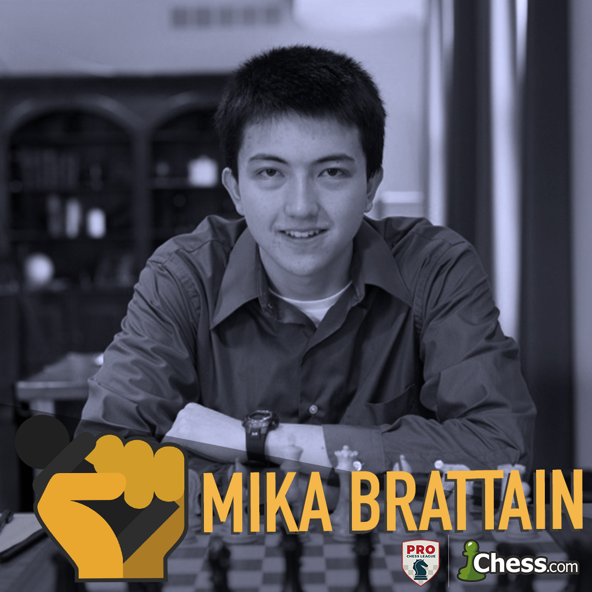
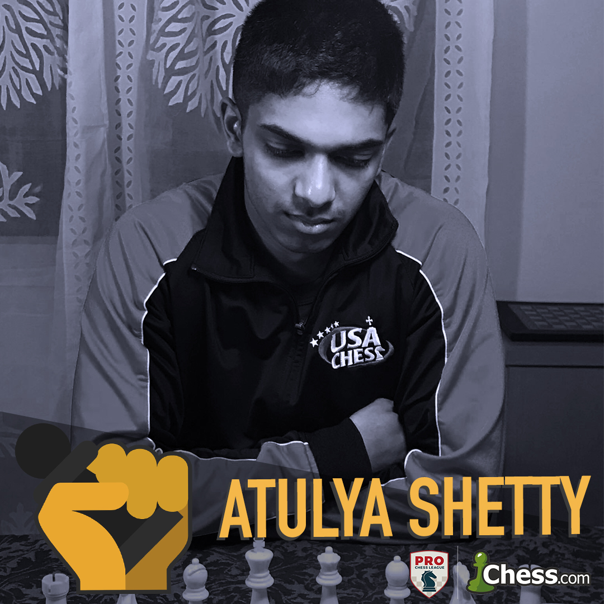
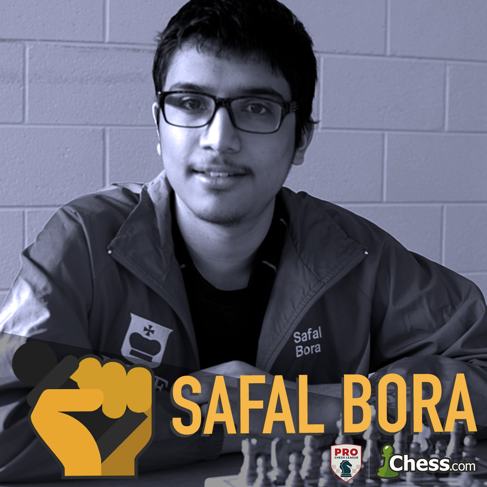
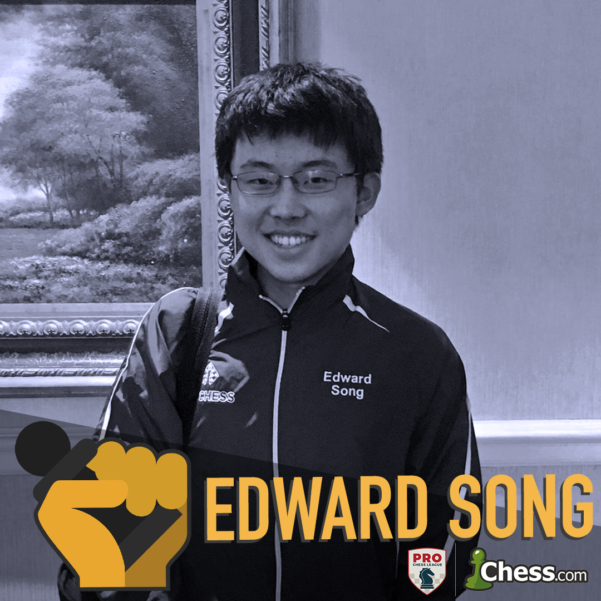
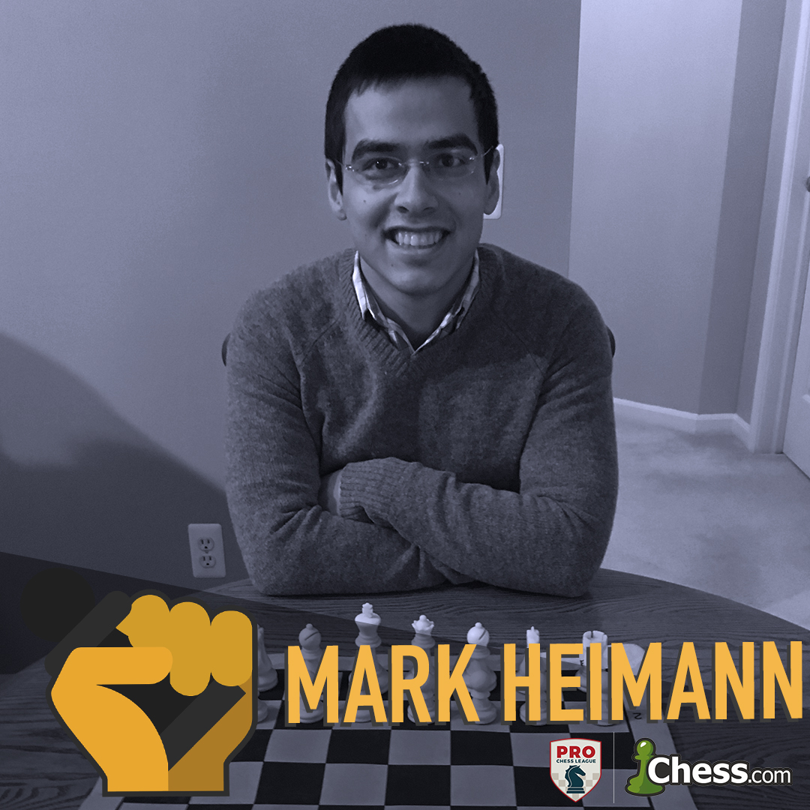
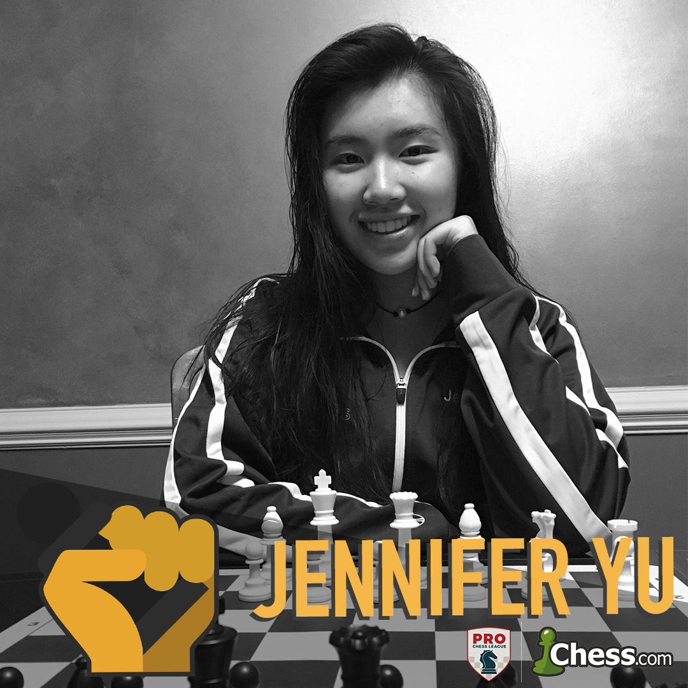
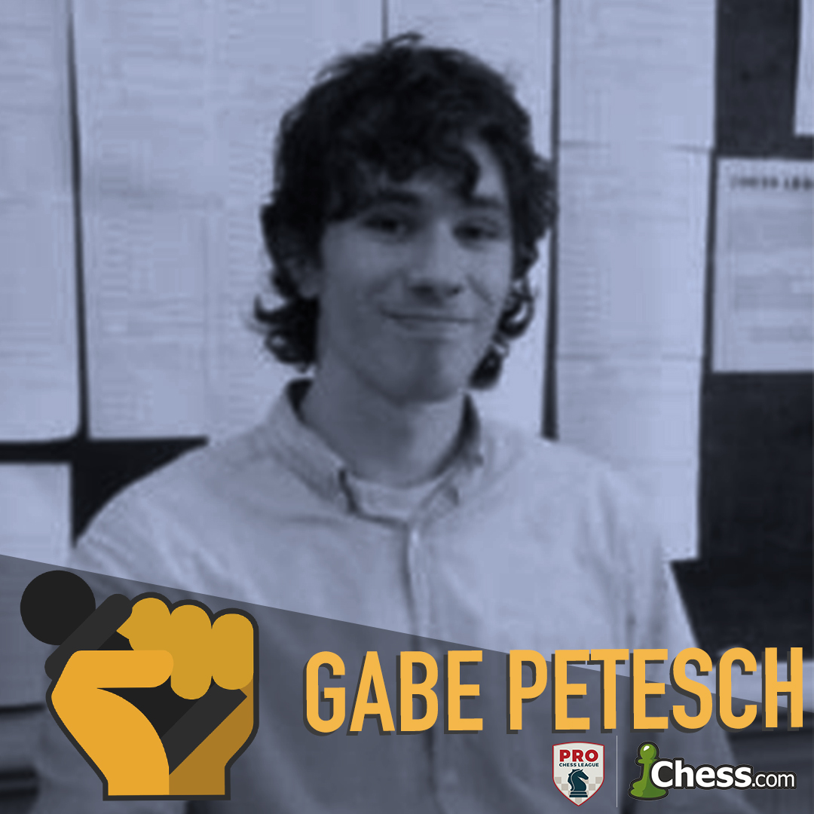

Pittsburgh Pawngrabbers
Awonder Liang
Now 15 years old, Awonder returns to the Pawngrabbers with his second consecutive US Junior Chess Championship title. In his rookie season for Pittsburgh, Awonder earned a spot in the PRO Chess League All Stars match after a sensational 2018 season where he defeated World Championship Challenger Fabiano Caruana, Hikaru Nakamura, and Lenier Dominguez.
Alexander Shabalov
A four time US Champion and seven time US Open winner, Grandmaster Alexander Shabalov is no stranger to the Pittsburgh Pawngrabbers. The 1998 silver Olympiad medal winner was inducted to the US Chess Hall of Fame in 2015, and his enterprising style of chess makes him a fan favorite in the PRO Chess League.
Tuan Minh Le
The 2015 Vietnamese Chess Champion returns to the Pittsburgh outfit as the third highest rated player in Vietnam. Better known as the ‘wonderfultime’ on chess.com, the youngster consistently ranks in the top 10 globally in bullet, alongside well known chess speedsters like Hikaru Nakamura, Vladimir Fedoseev, and Andrew Tang.
Mika Brattain
A Massachusetts native, Mika now attends Ohio State University and stands alone as the highest rated player in the state. The 2015 Massachusetts State Champion performed at near 2450-strength last season, including a defeat of 5-time African chess champion and 2700-rated Grandmaster Bassem Amin.
Atulya Shetty
An International Master and undergraduate student at the University of Michigan, the 2013 K-12 SuperNationals winner is Michigan’s highest rated player. Now a veteran for the Pittsburgh Pawngrabbers, Atulya looks to build off a 2500-level performance in the 2019 PRO Chess League season.
Safal Bora
After earning his second Grandmaster norm at the 2018 Chicago Open, International Master Safal Bora is prepared for his second season with the Pittsburgh Pawngrabbers. In 2013, the now University of Michigan undergraduate became co-champion of the Denker Tournament of High School Champions.
Ed Song
FIDE Master Ed Song enters his third year with the Pawngrabbers looking to build off a 2543 performance rating last season. The University of Michigan sophomore notched first place in both the 2017 K-12 SuperNationals and the 2017 Denker Tournament of High School Champions.
Mark Heimann
A Pittsburgh native, Mark returns for his second year with the Pawngrabbers after a strong showing in against the Miami Champions in last year’s season finale. Mark won the Pennsylvania State Championships in 2006 and 2009, and as a University of Michigan student won the 2016 Michigan Speed Chess Championships.
Jennifer Yu
Fresh off an individual bronze medal in the 2018 Olympiad in Batumi, Georgia, International Master Jennifer Yu looks to make a splash in the 2019 PRO Chess League for the Pawngrabbers. Last season, Jennifer made franchise history in becoming the first female to represent Pittsburgh.
Gabriel Petesch
A Pittsburgh native, FIDE master Gabe Petesch returns to the Pittsburgh Pawngrabbers as co-Pennsylvania State Champion, and the 6th highest rated player in the state. Now in his third year with the Pawngrabbers, Gabe has also recently won the 2018 G/29 State Championship, the 2017 G/60 State Championship, and the 2016 G/15 Speed Chess Championship.
About
We are the Pittsburgh Pawngrabbers! We are part of the Online Pro-Chess League.